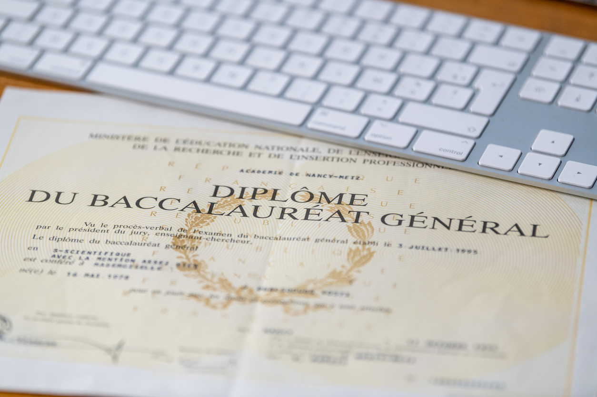

Le BUT métiers du multimédia et de l’Internet est accessible à tout
titulaire d’un baccalauréat, général ou technologique (STMG ou STI2D).
L’accès se fait sur dossier scolaire, projet motivé, voire tests et/ou
entretien. Rassurez-vous la mention au baccalauréat n’est pas prise en
compte dans l’admission.

Retour sur l'année 2020
Avec l'épidémie de coronavirus, les épreuves écrites du baccalauréat
2020 ont été annulées et c'est grâce au contrôle continu que les lycéens
ont pu valider leur diplôme ou non. Une année inédite donc pour
l'épreuve. On vous récapitule tous les résultats, académie par académie.